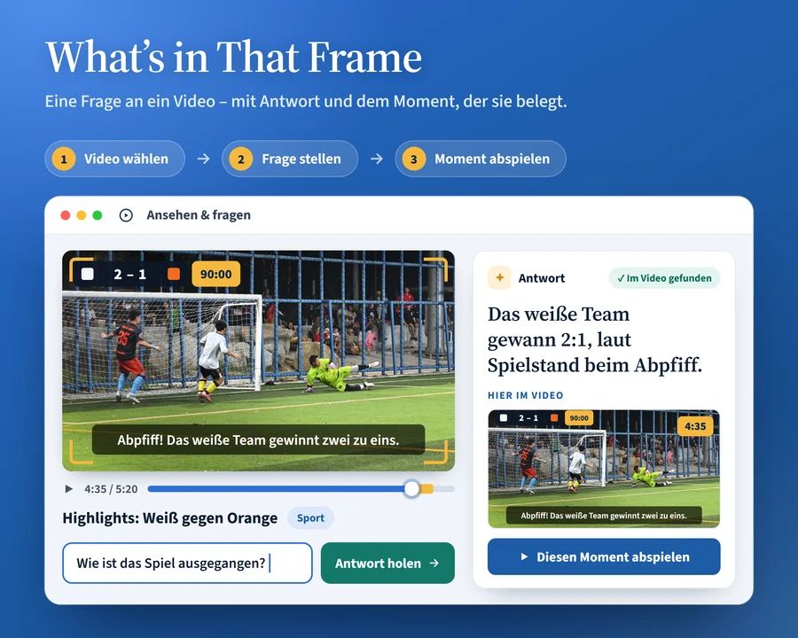
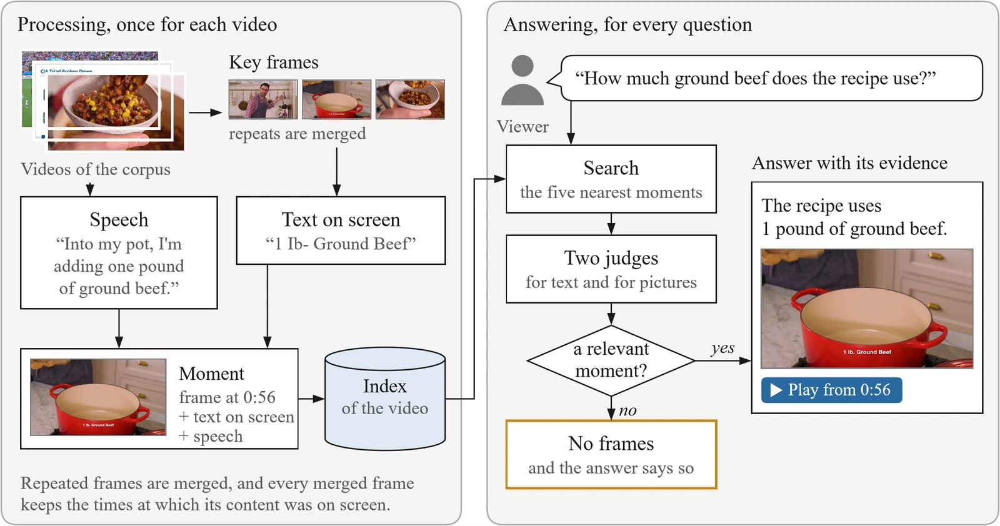
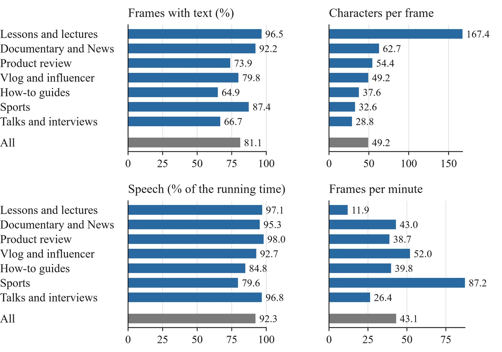
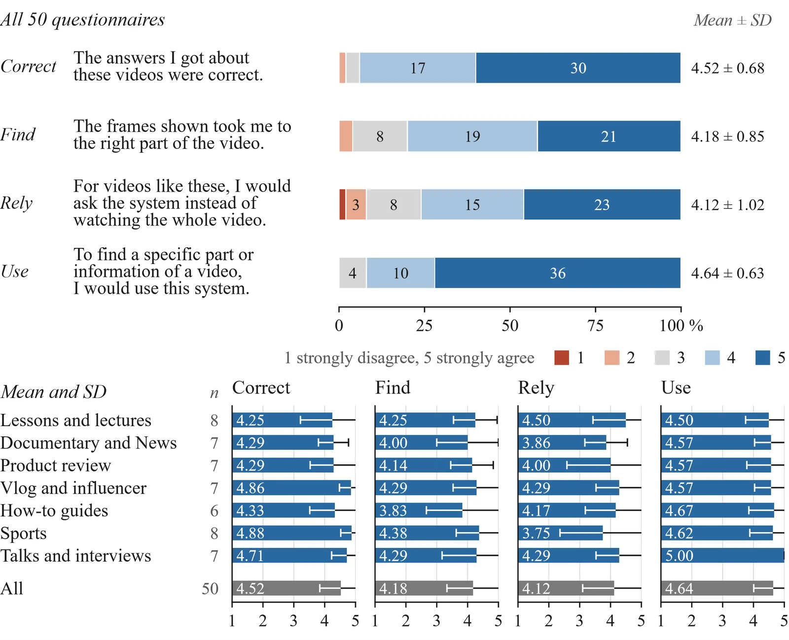
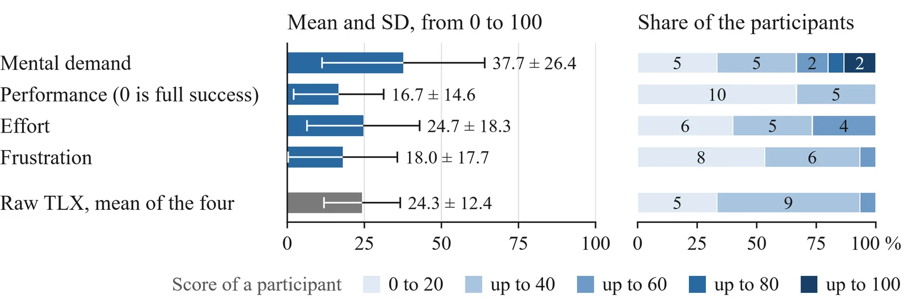

Funktioniert das System bei verschiedenen Videoarten, von textreichen Vorlesungen bis zu Sport und Gesprächen?
Antwort. Ja. In allen sieben Videoarten bewerteten die Teilnehmenden die Korrektheit der Antworten mit 4,0 bis 4,7 von 5.
Ein KI-System, das Fragen zu Videos beantwortet und genau den Moment im Video zeigt, der die Antwort belegt. Enthält ein Video die Antwort nicht, sagt es das.

Funktioniert es für jede Art von Video, was macht seine Belege verlässlich, und können Menschen es wirklich nutzen?
Antwort. Ja. In allen sieben Videoarten bewerteten die Teilnehmenden die Korrektheit der Antworten mit 4,0 bis 4,7 von 5.
Antwort. Die Arbeit gibt zwölf Empfehlungen. Drei sind am wichtigsten: wiederholte Bilder zusammenführen, ohne das Gesagte zu verlieren, nie zwei gleich aussehende Bilder zeigen und „nein“ sagen, wenn das Video keine Antwort enthält.
Antwort. Ja. Bei 75 % der Antworten waren die gezeigten Bilder vollständig korrekt, bei 70 % spielten die Teilnehmenden den Moment ab, und sie fanden das System leicht zu bedienen.
Zuerst geht das System jedes Video einmal durch: Es speichert die wichtigen Bilder, liest den Text darauf und schreibt auf, was gesagt wird. Stellen Sie eine Frage, sucht es die passendsten Momente, lässt zwei KI-Prüfer sie bewerten und antwortet mit den Bildern, die die Antwort belegen – oder sagt Ihnen, dass das Video Ihre Frage nicht abdeckt.


Ich habe das System mit 105 YouTube-Videos getestet, 15 von jeder Art. Sie tragen ihre Information an verschiedenen Stellen: Vorlesungen zeigen viel Text, beim Sport wechselt das Bild sehr oft, und in Gesprächen steckt die Antwort vor allem im Gesagten.

Zwei Tests: 525 Fragen mit bekannter Antwort und eine Studie, in der 15 Menschen eigene Fragen zu den Videos stellten.






Die Teilnehmenden wählten ein Video, stellten beim Ansehen Fragen und bekamen jede Antwort mit ihren Bildern – oder einen Hinweis, wenn das Video keine Antwort enthielt.


Videobilder, Vorschaubilder und Folien in den Abbildungen und Screenshots gehören ihren jeweiligen Urheberinnen und Urhebern. Die Abbildungen stammen aus der englischsprachigen Masterarbeit.
Masterabschluss im Dezember 2026, kurzfristig und deutschlandweit verfügbar.
Ich suche Stellen in KI-Entwicklung, angewandter Forschung und IT-Administration.